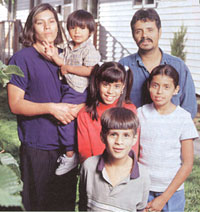
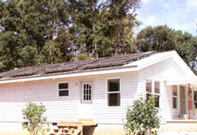
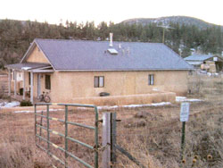
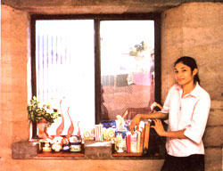
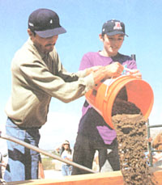

With their sweat equity, and the guidance and sponsorship of Habitat for Humanity, the Valadez family built their energy- and material-efficient Earth Smart home in Denver, Colorado. A solar collector mounted on the rooftop helps heat the household's water.
Habitat for Humanity's contribution to providing affordable housing is crucial with nearly 12 percent of Americans-33 million people-living below the official poverty line (now $18,104 per year for a family of four). Although the immediate need to provide low-cost shelter is obvious, what is becoming increasingly important is the ability to ensure that these houses are affordable to their owners over the long term. That means building homes that incorporate energy-efficient measures and technologies in their design. And Habitat's Green Team is doing just that.
Habitat's Environmental Initiative provides "green building" education and training to volunteers working with local Habitat affiliates. A special network of volunteers, known as the Green Team, leads the initiative in promoting energy-efficient, environmentally friendly construction practices.
"The purpose of the Green Team," says Green Team National Manager Graham Davis, "is to help Habitat affiliates build the kind of homes that families could hand over to their children's grandchildren."
Three principles guide Green Team building projects: 1) energy efficiency, including wise use of construction materials; 2) sustainability; and 3) maintenance of good indoor air quality. The team encourages builders and designers to construct homes with minimal impact on the environment. Team members also urge affiliates to incor porate a concise plan for reclaiming and recycling leftover materials, minimizing the use of natural resources and reducing the impact on the land. Beyond the physical structure, they also address human health issues, striving to create buildings that are free of toxic materials and that can be heated and cooled with the least amount of energy.
Built to exacting energy standards. Tucson, Arizona, Habitat's Modest but comfortable homes include a wide range of energy features: beefed-up insulation, super-efficient windows and overhangs to shade out the Summer sun. With little Outside energy input, these homes stay warm and cozy in the brief Arizona winters and comfortably cool in the long, sweltering summers. The Tucson Electric Power Company, which supplies utilities to the Tucson Habitat homes. is so confident of these energy-efficient homes that it guarantees that heating and cooling costs will average no more than $25 per month or 81 cents per day for a 1,200-square-foot, three-bedroom home.
Other affiliates also are leading the way in energy-efficient design and demonstrating the many benefits of common-sense building practices. In the fir northern reaches of Michigan-an area averaging 240 inches of snow a year-Copper Country's habitat for Humanity (HFH) affiliate is building passivesolar homes. Northern Michigan is cold and cloudy much of the winter, but the sun off ers enough warmth to make a significant dent in annual heating bills.
Taking advantage of solar energy and a long list of energy-efficiency measures, HFH Copper Country builds single-story, woodframe homes with 1,056 square feet of living space for just $35 to $39 per square foot. with winter heating bills of just $30 per month. Since 1999, all of the homes have been built with a southern orientation, to capture maximum solar gain. Backup heat is provided by energy-efficient baseboard hot water systems. Two-by-six-inch-thick walls create a spacious cavity, which is packed with high-density fiberglass insulation. Rigid foam board insulation is tacked onto the exterior sheathing, fortifying the thermal shield.
Roofs are insulated to R-60, far exceeding local building code requirements. Airtight drywall construction, a technique that produces nearly leak-proof walls, is used to prevent costly and uncomfortable drafts. The houses rest on frost-protected shallow foundations an innovative design that significantly reduces energy losses by using vertical and horizontal insulation to trap heat in the ground around a home. Copper Country also installs energy-efficient appliances and compact fluorescent lightbulbs to reduce electrical use, and low-flow showerheads to reduce water consumption.
"Energy efficiency and passive-solar heating save homeowners huge amounts each year in reduced utility bills," says Emily Dekker-Fiala, office coordinator for the group. "Many of our homeowners came from poorly built, drafty, energy-inefficient rental homes-houses built for copper miners at the turn of the century. These homes often cost $200 to $300 a month to heat. In our energy-efficient homes, heating bills run from $20 to $30 per month." What people need to realize, she says, is that an important aspect of affordable housing is not just the initial cost of the house, but making sure that people can afford to continue living in it.
In Colorado, HFH of Metro Denver also builds homes that incorporate passive-solar heating. Large, south-facing windows allow the low-angled winter sun to warm the interiors. Energy-efficient windows and wellinsulated walls, floors and foundations retain the solar warmth, reducing demand for auxiliary heating. Because the houses are wellinsulated and solar-heated, the furnaces can be downsized substantially. Energy-efficient models are standard. Programmable thermostats regulate backup heating and cooling systems, reducing demand when the house is unoccupied or residents are asleep. Insulation that keeps the houses warm in the winter also helps to maintain a cool interior in Denver's dry, hot summers. Plus, 2-foot-wide overhangs block the high-angled summer sun and provide shade for walls and windows.
Solar hot water systems are installed on the rooftops of some homes, providing up to three-fourths of the hot water needed for washing dishes, showering and bathing. Compact fluorescent lighting reduces electrical demand.
"Energy-efficient appliances like Whirlpool front-loading washing machines and gas drier also are standard equipment in new homes," says Mike Pritchard, HFH of Metro Denver's Director of Development. "The additional costs of energy-efficient appliances are funded by a grant from the Colorado Energy Assistance Foundation, which provides about $2,000 per home."
In 2002, the Denver group teamed up with the National Renewable Energy Laboratory to build a home that generates a portion of its own electricity from sunlight using photovoltaic modules. Habitat also has collaborated with the Buildings Technology Center at Oak Ridge National Laboratory, a research and development group focused on promoting energy-efficient and environmentally sound building technologies, and the U.S. Department of Energy's Building America program, which has built more than 14,000 homes with energy-efficient and affordable features. An initiative in Louden County, Tennessee, fostered Habitat's construction of several Zero Energy Buildings. Structural insulated panels in the floors, walls and ceiling create a tight building envelope and provide insulation, allowing a smaller air conditioner to be installed. A heatpump water heater saves about 60 percent in water heating energy costs. Solar-electric panels installed by the Tennessee Valley Authority provide power to the house and reduce demand on the utility grid.
Some Habitat affiliates have begun to take their homes to even greener heights by incorporating more environmentally responsible building materials.
HFH of Metro Denver, for example, paints some homes' interiors with low-VOC (volatile organic compound) paints. VOCs are solvents in paint that outgas (evaporate) as the paint dries, and can irritate the eyes and cause sore throats and coughing. Some VOCs are carcinogenic.
Advanced framing techniques ensure struc tural support with minimal material use. Finger-jointed studs (made from short pieces of wood) are used to frame interior walls. Floor joists are made from engineered lumber, which requires about half as much wood fiber as solid dimensional lumber, yet provides the same or greater strength. Many homes' floors are covered with carpet made from recycled plastic soda bottles. Recycled wood and plastic lumber are used to build decks. Low-water vegetation reduces lawn maintenance and water use in an area that suffers from periodic water shortages. Additional water conservation measures include installing low-flow showerheads and faucets. Waste from the building site, including wood and cardboard, is recycled.
Providing decent, affordable shelter, and creating a sense of security and comfort is primary to Habitat's mission. "Many people in our homes came from rental units that didn't even have heating and cooling systems," says Tucson HFH's Yvonne Coelet. Sixteen-year-old Isaac Felix lives with his mother and four siblings in a four-bedroom, passive-solar, rammed-earth house built by Tucson Habitat for Humanity. "The neat thing about our house is that when it's hot outside, it's cool in side, and when it's cold outside, it's warm inside. We don't even have to use our air conditioner or heater," Felix says.
Low fuel bills and affordable mortgages save families hundreds of dollars a year, preserving hard-earned cash for other necessities such as food, clothing and education. In 1997, the Valadez family moved into an energy-efficient home built by HFH of Metro Denver.
"The typical winter utility bill in their new home ranges from $47 to $52 per month, compared to $150 to $200 per month in their old apartment," says Pritchard. "Their summer utility bills now range from $20 to $27 per month, down from $65 to $75 per month in their apartment."
The extra savings allowed the mother, Estella, to hire a babysitter to watch the children while she attended culinary school. Today, Estella is a cook at Denver's prestigious Brown Palace, a five-star restaurant located in the heart of downtown Denver. Now that she's working as a cook, her family "experiences even more financial freedom and they now are living in an affordable home," says Pritchard.
Habitat's program of involving volunteers in the building process provides them with valuable knowledge and experience. With the Green Team program, volunteers who tote 2x6s and hammer nails-many of whom will build their own homes some day-also have an opportunity to learn about energy-efficient solar homes and green building materials.
"As we build the homes, volunteers are definitely learning from the construction su pervisors what they're putting in and why they're doing what they're doing to create energy efficiency. Every morning on the job site, we hold a volunteer orientation and talk about our energy-efficient homes," says Pritchard. "We're also sharing knowledge and experience with other affiliates."
According to Lori Vaclavik, executive director of HFH of Metro Denver, green building also sets an important standard for all builders to follow. With widespread adoption of these practices, we can all create habitat that provides people with comfort and savings while safeguarding the life-support systems of the planet.
Along with the invaluable assistance of volunteers, the Habitat for Humanity program requires homeowners to participate in the construction of their homes.
Left: Sixteen-year-old Isaac Felix gets his hands dirty helping to prepare the clay mixture for his family's Habitat rammed-earth home in the Silver Creek Development of Tucson, Arizona.
Relying principally on volunteers, among the most prominent of them former President Jimmy Carter, Habitat has built more than 130,000 homes for families since it was founded in 1976. Habitat homes appear in 82 countries, with more than 50,000 in the United States.
With donated and discounted building materials, and cash contributions from sponsors, Habitat helps families who need housing, and who commit to working shoulder-to-shoulder with community volunteers throughout the construction of their homes. In Tucson, Arizona, for example, single-parent families must agree to donate 200 hours of labor on the building or in the Habitat office; two-parent families must donate 400 hours of sweat equity, says Yvonne Coelet, Director of Public Relations.
Houses are priced affordably and the families who move in are given zero-interest loans. The interest-free loans and community underwriting of the project through volunteer labor and donated materials means home payments for the new residents are typically much lower than the rent payments they were making previously. In Tucson, families living in rental units pay at least $500 per month. In contrast, house payments for Habitat homes are typically about $350 per month. "With a house payment that's significantly lower than rent," says Coelet, "families can get ahead in life."
Besides dramatically lowering costs of living, Habitat homes provide unrivaled security to their partner families. Debbie Estrada, a single mom and Habitat homeowner in Tucson, is a stellar example. Several years ago, she suffered an accident and injury, which now confines her to a wheelchair. Today, she and her two children live in an "accessible home," specially designed to make fife easier for a wheelchair-bound individual, and built by the local Habitat affiliate.
Looking to build green? Want to cut resource use by purchasing used or surplus building materials at a fraction of their retail costs? Habitat for Humanity can help.
Today, more than 50 Habitat affiliates in the United States and Canada have begun selling donated building materials. The items are donated by contractors who ended up with excesses on building sites, by demolition crews who set aside usable materials or by the general public.
Cleverly called Restores, Habitat's retail outlets not only help recycle leftover materials, reduce trash in landfills and cut back on resource extraction, but they also help support Habitat for Humanity's work. According to the international headquarters, Habitat's most successful Restores generate enough revenue to build 10 or more houses per year!
To locate a Restore in your area, contact a local affiliate through Habitat for Humanity International or visit their Web site at http://www.habitat.org/cd/env/restore.aspx. For more information on Habitat for Humanity, or to find an affiliate in your area, contact Habitat for Humanity International; 121 Habitat St.; Americus, GA 31709; (229) 9246935; www.habitat.org.
|
 GREG CHRISTMAN To reduce the burden of energy prices on its homeowners, Habitat created this net Zero Energy Building in Laudon County, Tennessee. The house boasts two kilowatts of grid-connected photovoltaics, energy-efficient windows, structurally insulated panels and energy-efficient appliances. |
 COURTESY TUCSON HABITAT FOR HUMANITY Fourteen-year-old Sua-Ahira Felix lives in a rammed-earth home she and her family helped build with support from the Tucson, Arizona, Habitat for Humanity affiliate. |
 |
|
 |
 |
|